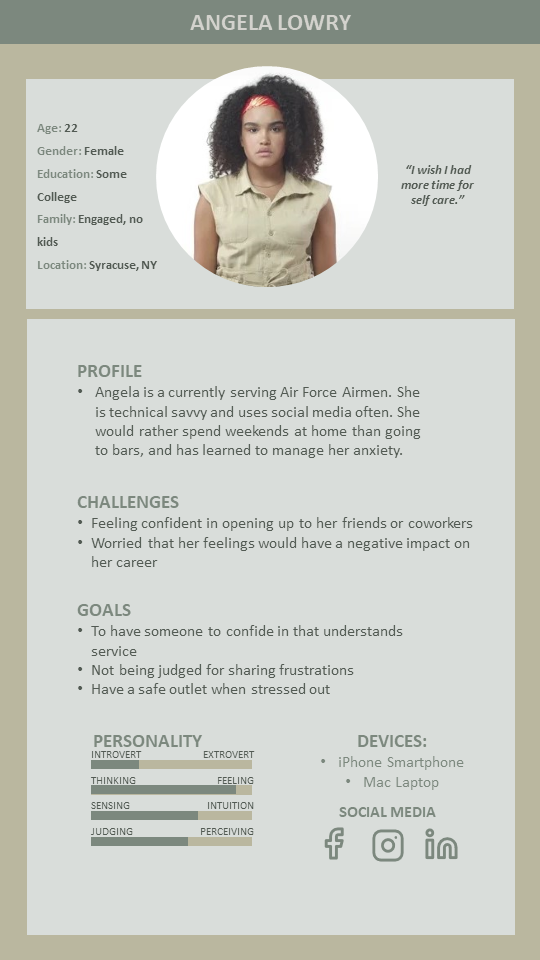
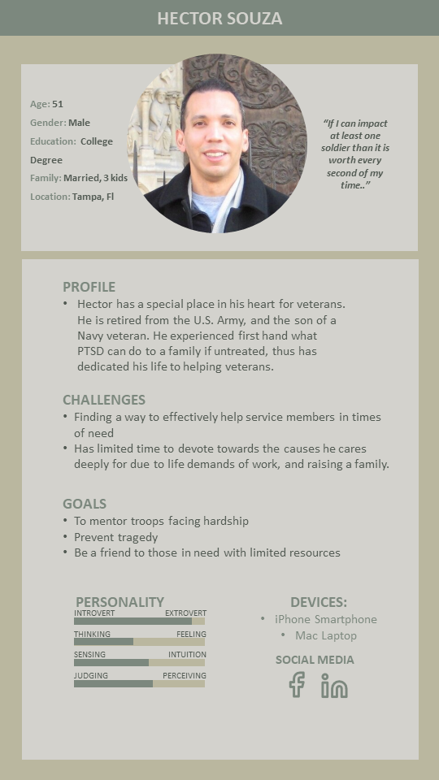
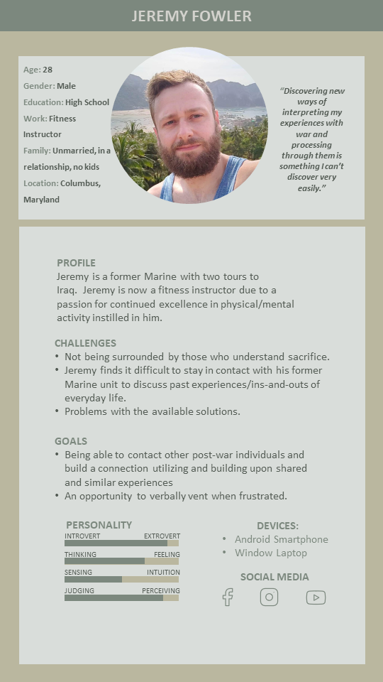
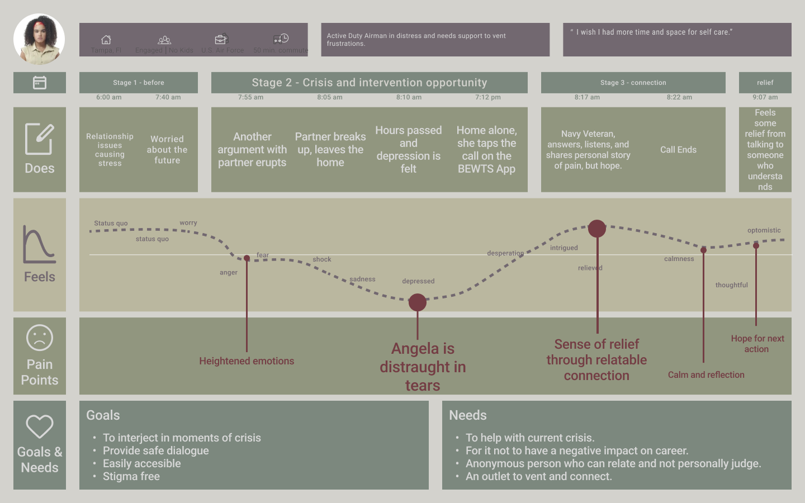
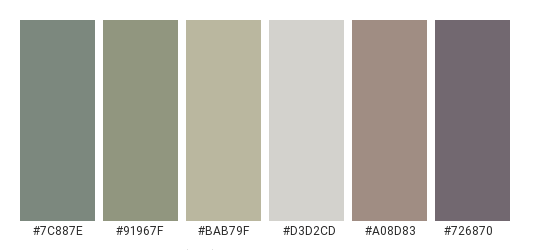
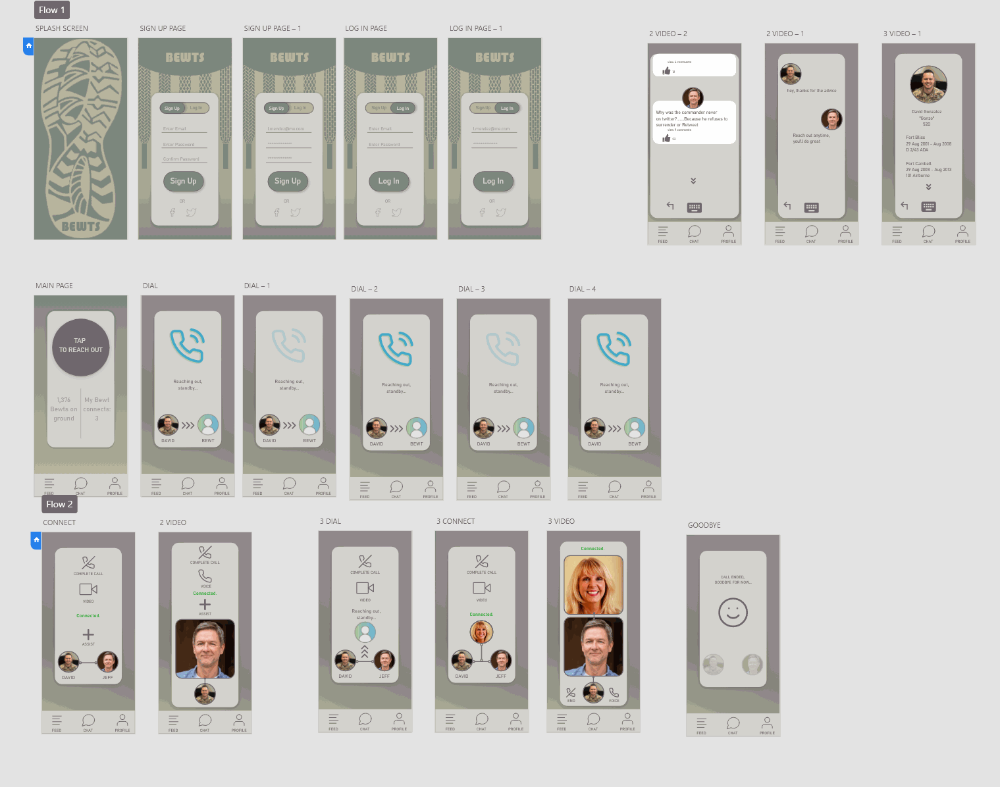

How the journey started...
22 Veterans a day end their lives by suicide. Research has shown that connection to others is vital in navigating life’s storms. Having an outlet, and those you can reach out to with no recourse can save lives. A stigma exists within the military ranks for seeking help for mental health due to fears of how it may negatively impact your career. This App breaks down one of the barriers of seeking help by allowing you to anonymously call other veteran peers who have downloaded this App solely for that purpose, to listen and be there for one another.
The Challenge
How can I develop an App that interjects between the moment someone is in distress without fear of use.
The Research
According to the study, Stigma as a Barrier to Seeking Health Care Among Military Personnel With Mental Health Problems, https://doi.org/10.1093/epirev/mxu012 -
The following six reasons are the most constantly cited for members not to seek help .
1. My unit leadership might treat me differently.
2. I would be seen as weak.
3. Members of my unit might have less confidence in me.
4. It would be too embarrassing.
5. It would harm my career.
6. My leaders would blame me for the problem.
Social connections can act as a buffer against the impact of stressful or negative life experiences on mental health according to many studies.
https://www.suicideinfo.ca/resource/socialconnectedness/




SOLUTION
Build an app that facilitates the connection without the hindrance of stigma. A mobile app that when prompted, anonymously, calls a network of veterans standing by to support one another. No fear of harm to your career.
The App would serve 2 user roles.
User 1: Ready to help (downloads app)
User 2: Needs help, anonymously calls network of others with the app.
The expectation is that many Veterans (user 1) are willing to offer themselves to assist others in need. This will result in many apps downloaded onto devices creating a network of veterans willing to assist and receive anonymous calls. The inverse is that the app is available in the case that they become user 2 needing help.
Users will verify Veteran status during registration through ID.me for user network integrity.
The call recipient has the option to hand off the call or have another helping professional join the call for expert guidance since many veterans are well intentioned but not trained to deal with escalated situations. The help button would automatically dial a professional who has the app installed with a Professional Identifier in their user profile.
When a user taps the button for a call, multiple recipients will be dialed and the first to answer takes the call.



CONCLUSION
As a First Sergeant in the U.S. Air Force, I understand hardships through the stories and shared experiences of those in uniform. I am a part of a military member's Leadership, but there are times when a soldier doesn't feel comfortable allowing their leadership to know their problems due to stigma, and also may not want to tell friends or family for personal reasons. This app allows someone to reach out to fellow, but relatively unknown helping vets.
This App also provides a call to action for Vets to give back to their brothers and sisters in arms. Not many people would casually download an app just for help, but they will download an app to help others. They inadvertently would have the app in case they needed it with just a click away. Especially if they experience first hand, answering the call of others. Connections can save lives.